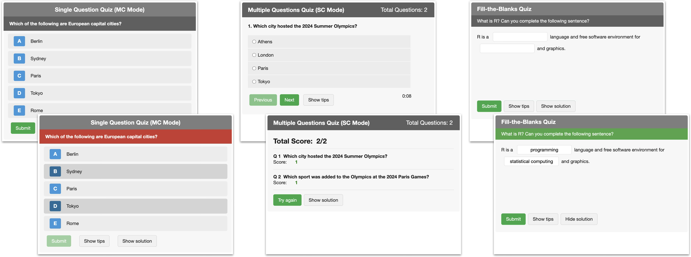

rquiz provides interactive quizzes as HTML widgets for R Markdown, Quarto, and Shiny applications. It offers three quiz types: a single question with instant feedback (singleQuestion), a multi-question quiz with navigation, timer, and results (multiQuestions), and fill-in-the-blank cloze exercises (fillBlanks). All quizzes support single-choice and multiple-choice modes, customizable styling, and multilingual UI.
I developed this package for my Data Science in Biology modules at the University of Hamburg, where I have been using and testing it with students since 2020 in HTML-based lecture slides (see e.g. fill-in-the-blank quiz and multi-page quiz in my Data Science 1 course).
Installation
You can install the development version from GitHub:
# install.packages("remotes")
remotes::install_github("saskiaotto/rquiz")
# or alternatively
# install.packages("pak")
pak::pkg_install("saskiaotto/rquiz")Quiz Types

Features
-
Three quiz types: Single question with instant feedback (
singleQuestion), multi-question quiz with navigation, timer, and results (multiQuestions), fill-in-the-blank cloze (fillBlanks) - Immediate feedback: Visual feedback (color changes) on answers
-
Customizable design: Colors, fonts, sizes — all configurable; reusable themes via
rquizTheme() - Multilingual: Built-in support for English, German, French, and Spanish currently
- Accessible: ARIA labels, keyboard navigation, focus indicators
- Shuffling: Randomize answer options or question order
- No dependencies: Pure Vanilla JavaScript, no jQuery
Learn More
- Creating Quizzes — Detailed guide with examples
- Gallery — Interactive demo of all quiz types
- Demo Files — Ready-to-use templates for Quarto, Slidy, and RevealJS
- Function Reference — Full API documentation
Credits
- The development of the
singleQuestionquiz was inspired by Ozzie Kirkby and his JS/HTML/CSS code on codepen.io. - The development of the
multiQuestionsquiz was inspired by Abhilash Narayan and his JS/HTML/CSS code on codepen.io.